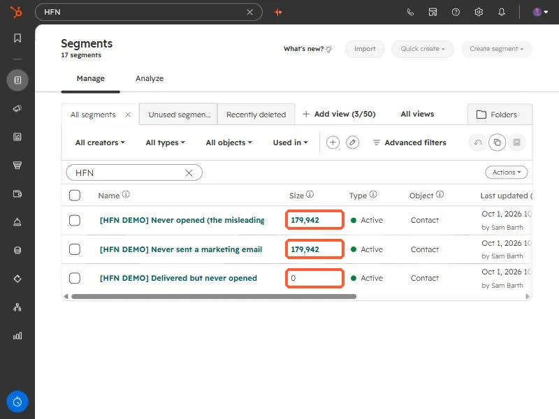
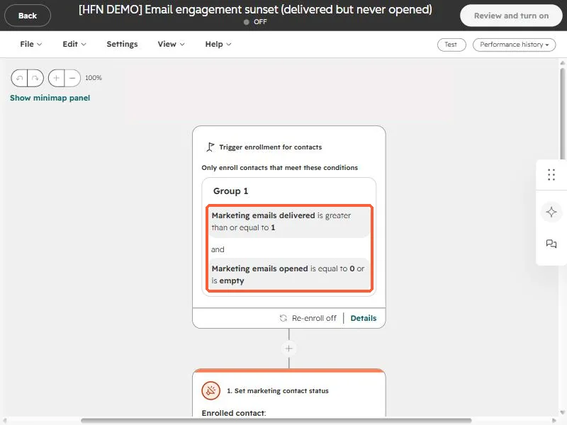

Short answer
A segment filtered only on Marketing emails opened being 0 or empty catches every contact who never opened an email, including contacts who were never sent one. Add Marketing emails delivered is at least 1 and the number drops to the people who actually ignored your email. In my demo portal the naive version returned about 180,000 contacts and the honest version returned zero, because none of them had ever been emailed.
1. The count that looks wrong
On a recent engagement for a home builder, the plan included an email sunset: stop marketing to contacts who never engage. The first step is counting them, and the first count I built was misleading. I rebuilt both versions in a demo portal so you can see it. Open Segments. The three segments below all hold contacts.


The first segment is "opened = 0 or unknown". The second is "never sent a marketing email". They are the same size because in this portal nobody was ever emailed, so every contact counts as a never-opener. The third, which requires at least one delivered email first, is the real answer: nobody has ignored an email yet.
2. Build the honest version
Use two filters together, joined with AND:
- Marketing emails delivered is greater than or equal to 1
- Marketing emails opened is equal to 0, or is unknown
The same two conditions work as a workflow enrollment trigger, which is how I set up the sunset flow. This is the demo version, left turned off.


Start from Workflows and pick contact-based, then add the filters in the trigger.
3. Before you act on the list
- Open tracking is imperfect. Some mail clients preload images, and some block them, so an open is a signal and not proof of reading. Check clicks too before treating someone as dead.
- Put a re-engagement email first. For the home builder, the agreed plan was a 30 day re-engagement window before anyone was switched to non-marketing.
- Non-marketing is reversible. It stops billing for the contact and stops marketing email, and you can switch it back.
Whenever a HubSpot number looks suspiciously large, build a second segment with one extra condition and compare. If the two are identical, the extra condition was already implied.